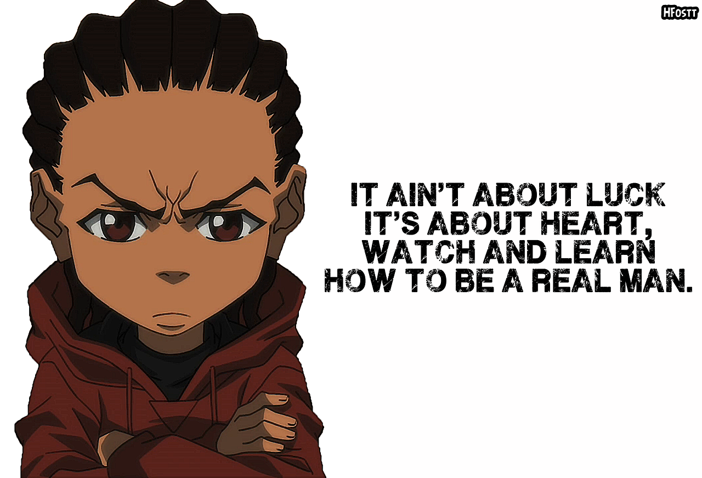

About Riley
Riley Freeman is the deuteragonist of The Boondocks. He is Huey Freeman's younger brother and Robert Freeman's youngest grandson. He is an 8–year-old who emulates the gangster lifestyle. He and many others commonly refer to him as "Riley Escobar", "Young Reezy", and "The Fundraiser".
Riley giving solid advice
Riley's Characteristics
- He is an impressionable third grader
- He embraces the stereotypical ganster lifestyle
- He defencds his idols even when his imitations go against common sense and righteousness
Riley's Friends
Riley's friends are Ed and Gin. They're the closest thing to a gang that exists in Woodcrest. They are not the best company to hang out with but Riley enjoys the thrill of their street adventures. Click on the links below to read more about them.